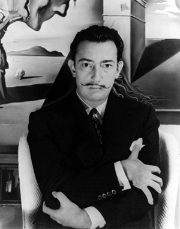

Salvador Dalí
Seu pai era austero, mas Dalí recebeu da mãe o apoio necessário para seguir a carreira artística. Despertou para a pintura em 1916, durante uma viagem da para a cidade Cadaqués, com a família de Ramón Pichot, um pintor impressionista. Foi estudar em Madrid, em 1922. Frequentou a Real Academia de Belas Artes, mas foi expulso em 1926, depois de afirmar que não havia ninguém com competência para julgar seus trabalhos. Depois desse incidente, foi para Paris e se ligou ao grupo dos surrealistas. De 1928 até 1931, Dalí participou de diversas exposições, publicou livros e até fez dois filmes, junto com Luis Buñuel, “Um cão andaluz” e “A cidade de ouro”. Foi a partir desse período que pintou seus quadros mais famosos. Entre 1930 e 1935, com obras como “Persistência da memória”, Dalí se consagra como um ícone do seu estilo, surrealista. É conhecido tanto por sua arte com uma incrível combinação de bizarrices, figuras oníricas, como pela excelência plástica que o tornou internacionalmente conhecido. Há, porém, uma mudança no trabalho do artista. Após a Segunda Guerra Mundial, sua arte passou a imitar o classicismo renascentista. Dalí passou para outras áreas, criou móveis e jóias, além de influenciar a publicidade e a moda. Seu marcante bigode era uma inspiração em outro grande pintor, Diego Velásquez. Estilo forte, extravagante, Dalí foi aclamado como responsável pela revitalização do surrealismo. Com a morte da esposa, Gala, em 1982, Dalí entrou em uma grande depressão. Chegou, inclusive, a tentar suicídio em 1984, quando passou a receber os cuidados de seus amigos. O artista morreu em 1989, de uma pneumonia e parada cardíaca, na mesma cidade em que nasceu.

1943

BB

Canibalism

Dulcinea

Esferas

Niego

Onma

Sleep

Voltaire

Woman
Contém informações falsas. Site desenvolvido apenas para estudo.